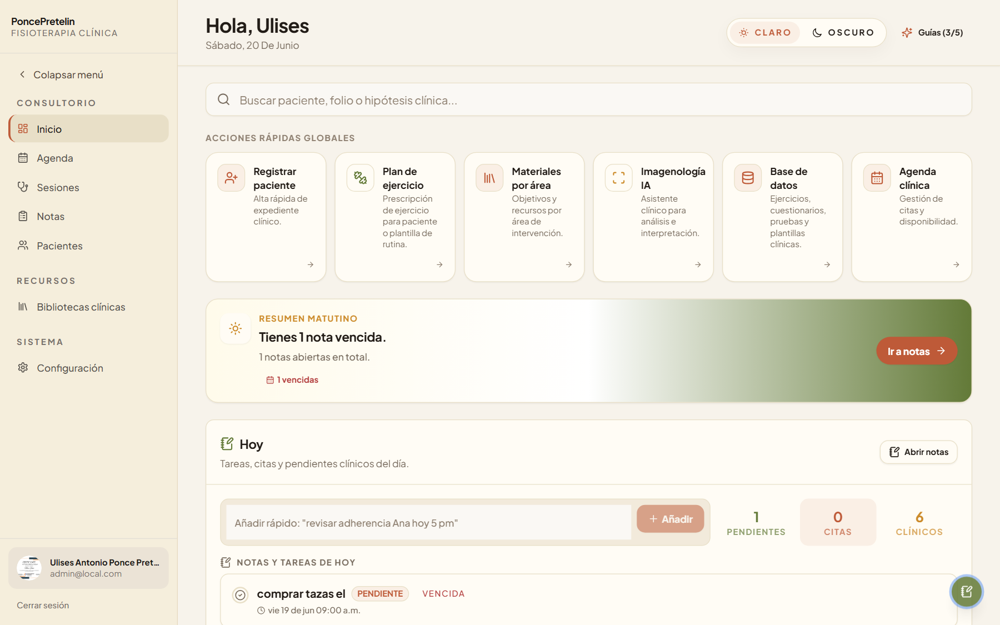
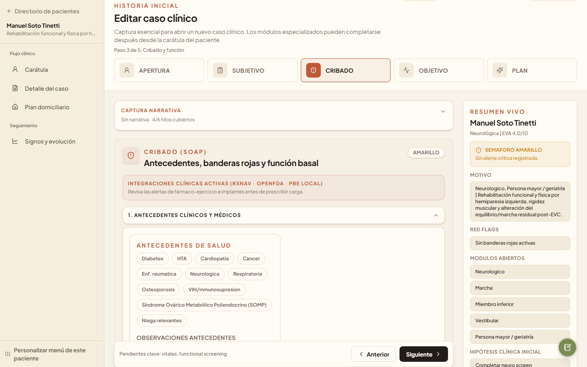
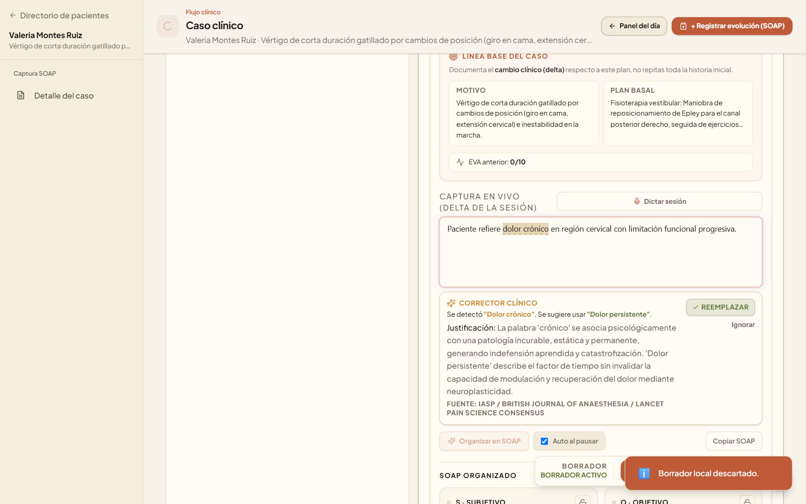
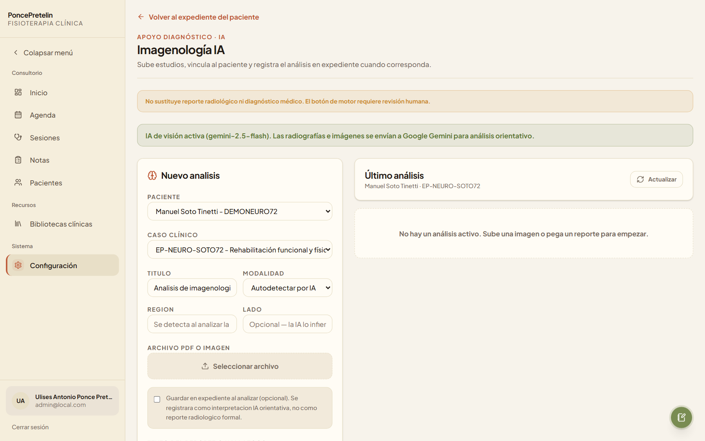
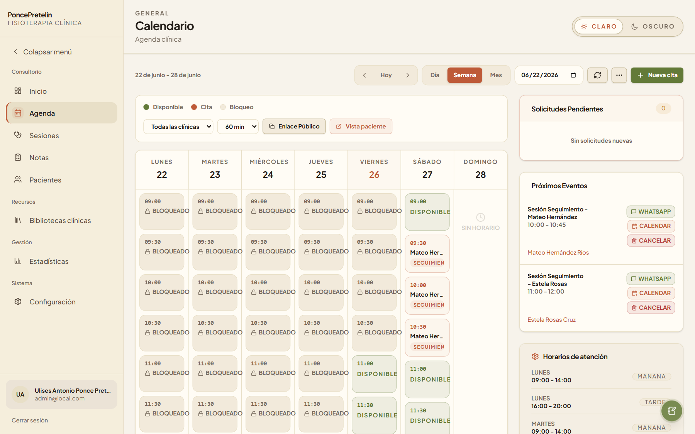
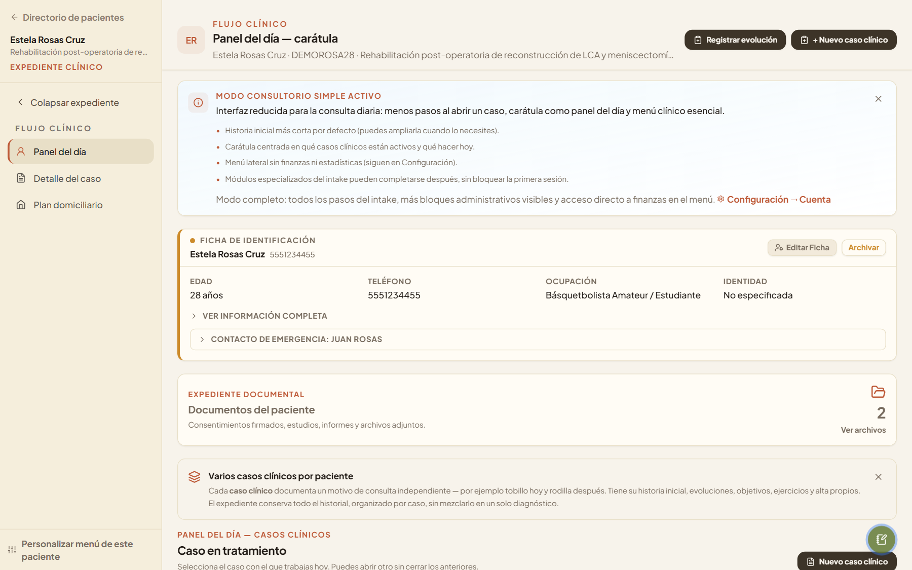
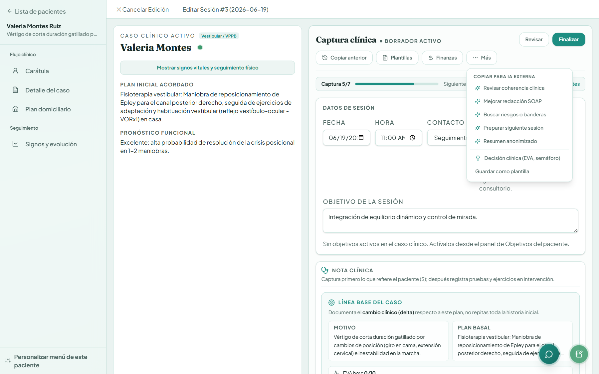
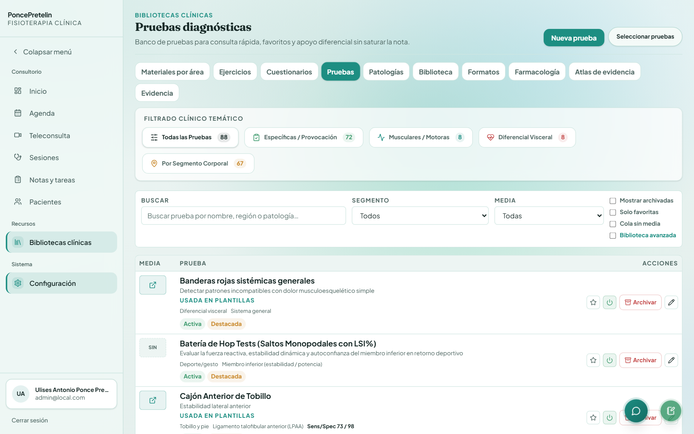
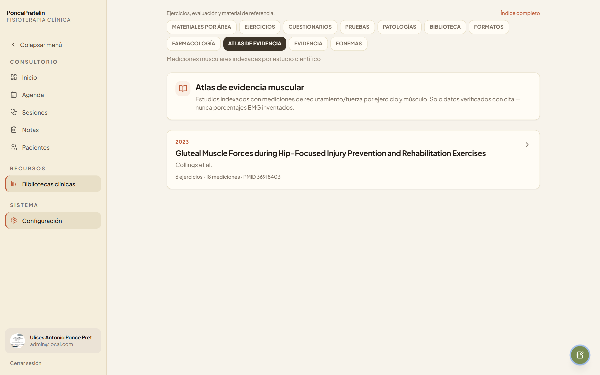
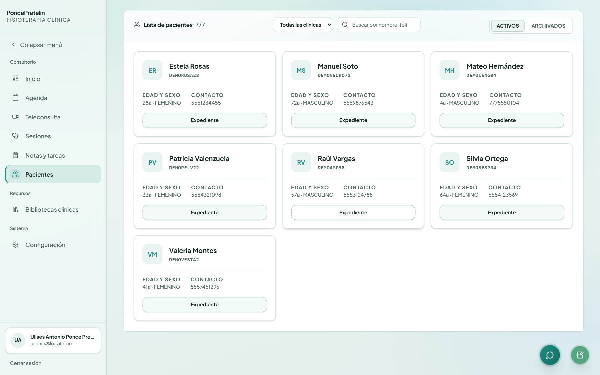

Motor clínico y expediente
Dashboard, agenda, pacientes, episodios activos y flujo por consultorio — la base operativa del gestor.

Portafolio · 2026
Fisioterapeuta e Ingeniero de IA clínica
Ulises Antonio Ponce Pretelin es fisioterapeuta e ingeniero de IA clínica en Xalapa, México. Es creador de PoncePretelin, un gestor clínico con evidencia referenciada, integraciones openFDA/RxNav y módulos de apoyo con IA para fisioterapia — no un EMR genérico.
Profesional en Terapia Física con experiencia en contextos clínicos, comunitarios e internacionales. Diseño e integro PoncePretelin: flujos clínicos, datos referenciados, integraciones de seguridad y módulos de apoyo con IA que respetan el juicio profesional.
Enfoque · Seguridad clínica
01 — Sobre mí
Licenciado en Terapia Física (ICES, Xalapa). Experiencia con poblaciones con necesidades especiales en México, Estados Unidos y entornos interdisciplinarios, incluyendo terapia de lenguaje y campamentos de inclusión con Citizens Options Unlimited.
Aplico razonamiento clínico y práctica basada en evidencia para diseñar la arquitectura de PoncePretelin: pruebas con valores referenciados, escalas EBP, terminología IASP y CIF OMS, integraciones de seguridad y módulos de IA como apoyo — no sustituto del criterio profesional.
02 — Trayectoria
Clínica de terapia de lenguaje · entorno interdisciplinario · Xalapa
Ingeniero y creador del gestor clínico con IA para fisioterapia
Citizens Options Unlimited · campamento de inclusión · EE.UU.
Clínica Hospital ISSSTE Xalapa · servicio social · área clínica hospitalaria
INECOL (salud ocupacional) · Velódromo Internacional de Xalapa
Camp Counselor y Behavior Helper · población con discapacidad · EE.UU.
Campus Xalapa · estudios finalizados · titulación en curso
03 — Proyecto destacado
Gestor clínico con IA y evidencia referenciada — no formularios vacíos.
Motores clínicos
Cada capa resuelve un problema distinto del expediente — lo que ves en las capturas del gestor.

Dashboard, agenda, pacientes, episodios activos y flujo por consultorio — la base operativa del gestor.

Avisos de seguridad, recomendaciones y contexto farmacológico en el detalle del caso — openFDA y RxNav integrados al flujo.

Corrector de lenguaje prudente con terminología IASP y CIF OMS en notas, reportes y documentación del expediente.

Asistencia en notas SOAP, atlas de evidencia referenciada y módulos de imagenología — apoyo al criterio, no sustituto clínico.
Interfaz real
Interfaz real de PoncePretelin: inicio, agenda, expediente, SOAP, alertas openFDA/RxNav, corrector IASP e imagenología con IA.






Diferencial
Formularios vacíos vs automatizaciones clínicas con fuentes referenciadas y lenguaje prudente.
Sensibilidad y especificidad de pruebas con valores referenciados en la literatura — no inventados ni generados al azar.
Terminología versionada y referenciada: IASP 2020, CIF OMS, lenguaje centrado en la persona.
Módulos de IA para imagenología y asistencia clínica integrados al expediente.
Roadmap honesto
Primera versión pública en desarrollo activo. Lo que ya funciona y lo que sigue en curso.
Pacientes, episodios, SOAP, agenda, finanzas y portal paciente.
Pruebas diagnósticas, escalas EBP, atlas de evidencia y presets por patología.
Apoyo en imagenología y asistencia clínica integrados al expediente.
Guías de instalación, más presets clínicos y despliegue estable en Render.
Formación continua
18+ cursos en clínica, salud mental y plataformas en línea — datos del CV, sin inventar.
Inst. Nacional de Geriatría · abr — may 2022
CONAMEGE · mar 2023
Universidad de Toronto, Coursera · may 2021
Pontificia Univ. Católica de Chile · jul 2021
Inst. Nacional de Geriatría · abr — may 2022
Entrenamiento y rendimiento deportivo
PoncePretelin
Stack técnico con el que construyo y despliego el gestor clínico.
Referencias y frameworks que aplico en la arquitectura del sistema.
En la práctica
Tarjetas con fuentes verificables: experiencia clínica, perfil profesional y capacidades reales de PoncePretelin.
Servicio social en Clínica Hospital ISSSTE Xalapa: valoración, tratamiento y seguimiento fisioterapéutico en contexto hospitalario público.Ver CV →
Corrector clínico IASP sugiere «dolor persistente» en lugar de «dolor crónico», con fuente referenciada en la nota.Ver capturas →
Fisioterapeuta e ingeniero de IA clínica en Xalapa — perfil público con trayectoria clínica, internacional e ingeniería de PoncePretelin.Abrir perfil →
Intake con Warfarina, Aspirina y marcapasos Medtronic: banner RxNav, openFDA y PBE local activos en el flujo clínico.Probar en demo →
Cabin Leader en Citizens Options Unlimited (EE.UU.): inclusión, accesibilidad y liderazgo con población con discapacidad.Ver experiencia →
Pruebas diagnósticas con sensibilidad y especificidad referenciadas en la literatura — Magee, Cook & Hegedus, no valores inventados.Ver repositorio →
Gestor desplegado en Render: dashboard, agenda, expediente, SOAP, alertas e imagenología con IA — explorable sin instalar.Abrir demo en vivo →
Workspace de imagenología IA vinculado a paciente y episodio — apoyo orientativo, no sustituto de radiología.Ver en carrusel →
Licenciatura en Terapia Física (ICES Xalapa) + ingeniería de IA clínica aplicada al expediente con evidencia referenciada.Ver formación →
Enlaces a fuentes públicas, CV y demo en vivo. Las capturas corresponden a la interfaz actual de PoncePretelin.
Preguntas frecuentes
Respuestas directas para entender el proyecto, el rol profesional y los límites de la IA clínica.
Lic. en Terapia física · Xalapa, Veracruz
Fisioterapeuta e Ingeniero de IA clínica
07 — Contacto
Si revisas el proyecto, quieres colaborar o desplegar PoncePretelin en tu consultorio.